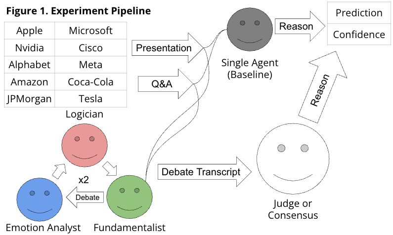
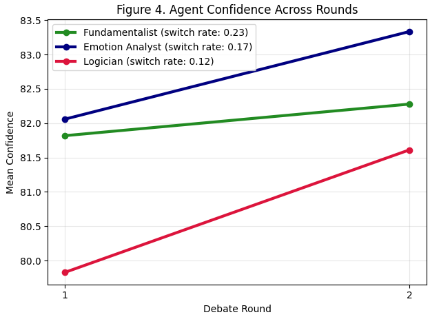
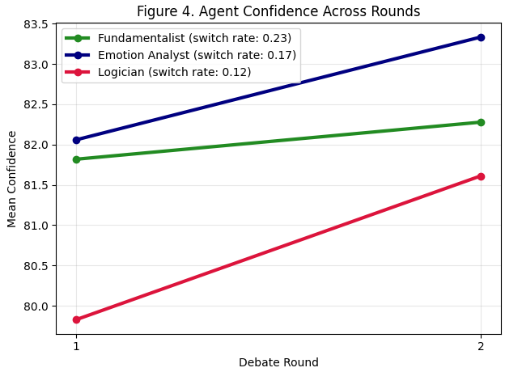

Abstract
Forecasting stock price movements is a heavily studied subject, often focusing on numerical trends or current events. Earnings calls are a promising input to this sort of analysis because these are when the company discloses their quarterly performance. Recent advances in LLMs provide novel opportunities to analyze large, unstructured linguistic data, like transcripts from earnings calls. However, a single LLM agent cannot assess all of the important dimensions of these lengthy documents. Factors like emotion, financial fundamentals, and logic are all features from these transcripts that are indicative of executives' expectations for company performance, but single agents tend to underexplore these. In order to overcome a single agents narrow reasoning abilities, a multiagent debate (MAD) framework can be used to prompt agents to each explore one dimension individually, then reason amongst each other to make predictions about future stock value. After debating, they can either agree on future stock value, or a judge can assess their arguments and make a final decision. Ultimately, this approach was able to achieve an accuracy of 52.5% for predicting whether a company's stock value will increase, decrease, or remain stable over the next quarter, while a single agent achieved 22.5%. However, the agents were not able to provide any sort of meaningful confidence level, as these did not correlate strongly to returns.
Multiagent Debate Pipeline
Figure 1. The experiment pipeline used in this project.

Quarterly earnings call presentation and Q&A transcripts from these ten companies were provided to the agents in order for them to predict the trajectory of the stock value over the next three months. Due to compute restraints, these transcripts had to be truncated to just the last 20000 tokens, roughly half of the transcripts.
Introduction / Background / Motivation
Objective
I built a system that takes in a transcript from a company's earnings call presentation or Q&A session, prompted agents to explore some key dimensions (financial fundamentals, emotion, and logic), and then debate amongst themselves in order to predict what these dimensions suggest about the company's stock value over the next quarter. These agents would discuss for two rounds and then either agree on a prediction, or a judge personality would assess their debate and make a final prediction. This system provides insight into whether or not these features are predictive for future stock value. Furthermore, this work demonstrates that multiple agents are able to reason better across multiple dimensions than a single agent.
Previous Work
Often, these predictions are made based on basic financial numbers or from other language sources, like social media and news stories. These might contain some important signals, but they are likely different than those in earnings calls because earnings calls contain insider-adjacent information (as in, it is coming from people at the company). This makes them potentially more useful because they are less skeptical than social media, for example. Also, single agents can try to reason, but they often suffer from degeneration of thought and tend to not correct themselves. This makes their reasoning rather flawed, because they build off of bad logic. They also focus narrowly on only a few features, lacking breadth in their reasoning.
Motivation
Investors, analysts, and researchers care because earnings calls influence billions of dollars. This system could provide some insight into what is contained in these calls that correlates to stock value, aiding investors. This also further demonstrates that multiagent systems are more capable at reasoning than single agents, which has important implications for intelligent systems.
Approach
Method
My system works by taking the transcript of either an earnings call presentation or an earnings call Q&A session, then providing it to 3 different GPT-4o agents. One agent is the fundamentalist, who is supposed to focus on aspects like revenue and guidance. The next agent is the emotion analyst, who focuses on things like confidence, tone, and enthusiasm. The third agent is the logician, who focuses on consistency, clarity, and realism of strategy. These agents are given the transcript and then take turns making their argument. There are two cycles of debate, and if they don't agree on the second one, then a judge personality assesses their debate and provides a final prediction. These three agents provide a mechanism for the system to focus deeply on multiple different dimensions, as well as incentive for these agents to change their minds and reflect on other considerations. This helps avoid several of the issues with single agents, such as degeneration of thought, lack of self-correction, and a narrow focus. The novelty in this approach is that these three agents are prompted to focus on three major aspects of earnings calls, which other language data might not have all three of. For a baseline, I prompted a single agent to reason about these three dimensions, and then provide a prediction and confidence score.
Obstacles and Limitations
The main problem I anticipated was computational constraints. I originally hoped to use a free model, such as LLaMA-2-7B-32K. However, this model was not good at following instructions, so I switched to GPT-4o. This cost me some money to run my experiments, but this model followed instructions much better. Another problem I ran into were the number of tokens I could supply to the model. The transcripts tended to be around 40000 tokens, but the OpenAI API did not allow me to provide more than 30000 input tokens per minute. This forced me to cut my transcripts in half, which was far from ideal, because I was losing a lot of information. Nonetheless, the MAD framework performed decently well. I still ran into issues of agents not following instructions sometimes, so I was forced to omit a few samples from my results.
Results
Evaluation
I used several evaluation metrics, including accuracy, AUC, mean confidence, the correlation between confidence and returns, and a Sharpe Ratio, which measures whether returns are appropriate for a stock's volatility. The single agent served as a baseline for all of these metrics. I also evaluated how the different agent's confidences changed between the two rounds and how decisions made by the judge compared to those made by consensus. Seeing that I had 10 companies and 4 transcripts per company, I had roughly 40 samples for each metric. However, a few samples had to be removed because the agents didn't follow instruction (the single agent in particular). The MAD system outperformed the single agent in accuracy, but most of the other metrics were pretty similar between the two. Since accuracy is the only one that's based strictly on predictions and the rest consider confidence, this suggests that the MAD system could make better predictions, but the confidence scores that were outputted were not very meaningful. Accuracy tended to be pretty similar for both presentation and Q&A transcripts, as well as judge versus consensus decisions. However, the judge was only used twice out of 40 samples, suggesting that the judge was not very important for making predictions. The judge did obtain an AUC of 1, but this is only because that persona only had two samples. The different agents all grew in confidence between the two rounds, with the emotion analyst having the highest confidence and the fundamentalist with the least. The fundamentalist also had the highest switch rate of 0.23, suggesting that they were more likely to agree with other agent's assessments and agree with their prediction. The logician had the lowest change in confidence and also the lowest switch rate, so it tended to stand firm in its predictions.
| Metric | Accuracy | AUC | Mean Confidence | Confidence/Returns Correlation | Sharpe Ratio |
|---|---|---|---|---|---|
| Multiagent | 0.525 | 0.49 | 81.25 | 0.25 | 0.1 |
| Single Agent | 0.225 | 0.52 | 81.25 | 0.23 | -0.13 |

 

Conclustion and Future Work
Since I had 40 samples, this should be enough to demonstrate that these results are not purely chance, so this work could be replicated. The most important consideration for replication, however, is how the agents are prompted. They need to be advised to focus on certain aspects of the text that are likely to be important for future stock value. I showed what a few of those features are, but certainly there are many others. It is possible that these results could be much stronger with even better prompting. Also, using an API that has a higher token-per-minute limit will likely also improve results because the dataset was very truncated here. I was severely limited by computational considerations, such as cost, time (it took around two and a half hours to analyze my 40 transcripts), and token-per-minute allowance. Providing entire transcripts, or presentations and Q&As simultaneously, could lead to much better results. Another important consideration, however, is that this only works until people know it works; if an executive were to find out that certain phrases were correlated to stock prices increasing, they would say it more, causing transcripts to be less reliable. This would probably harm the system's accuracy. Nonetheless, this work demonstrates the utility of multiagent reasoning and its applications to finance, which lead to fairly helpful investing advice.